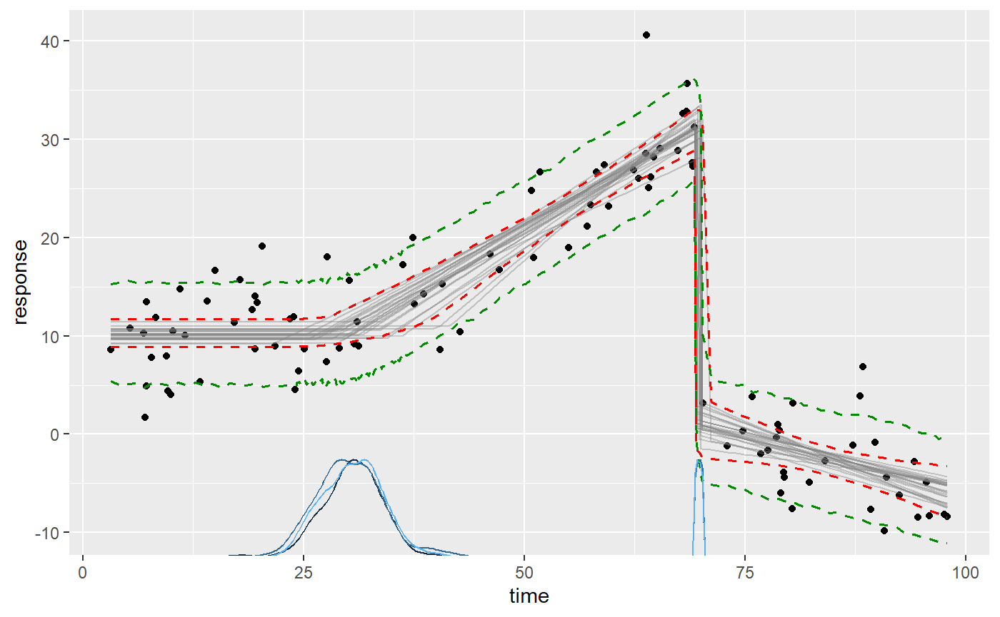
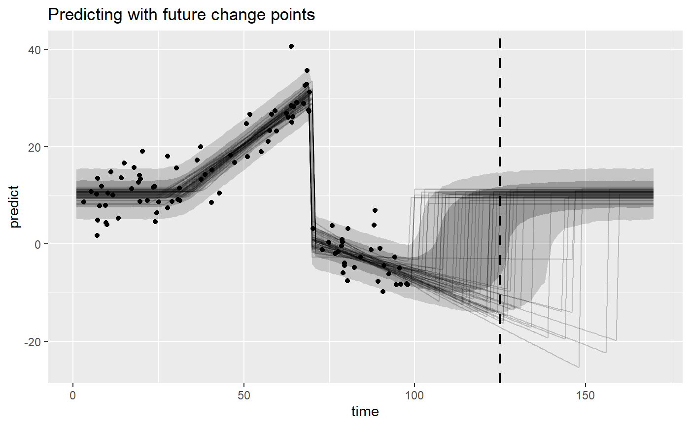

This article introduces predict(), fitted(), residuals() for in-sample and out-of-sample data. I will also show how to get creative with mcp, including how to make predictions around future change points.
We need an mcpfit to get started. We take the ex_demo dataset:
library(mcp) options(mc.cores = 3) # Speed up sampling set.seed(42) # Make the script deterministic head(ex_demo)
## time response
## 1 68.35820 32.842651
## 2 87.29038 -1.160003
## 3 69.01173 27.564248
## 4 11.59361 10.062971
## 5 19.50091 14.056859
## 6 46.12009 18.292640… and model it as three segments, i.e., two change points:
# Define the model model = list( response ~ 1, # plateau (int_1) ~ 0 + time, # joined slope (time_2) at cp_1 ~ 1 + time # disjoined slope (int_3, time_3) at cp_2 ) # Fit it. The `ex_demo` dataset is included in mcp fit = mcp(model, data = ex_demo)
This is what the data and the inferred fit looks like with 95% credible interval and a 80% prediction interval:

To review what we see here:
ex_demo.plot(fit, lines = 100)).plot_pars(fit, pars = c("cp_1", "cp_2"))).Behind the scenes, plot() merely calls predict() and fitted() to show these inferences.
fitted() valuesTo get the fitted values for each data point, simply do fitted(fit):
## time fitted error Q2.5 Q97.5
## 1 68.35820 30.364198 1.0341955 28.302294 32.399471
## 2 87.29038 -3.326585 0.7686739 -4.846219 -1.800347
## 3 69.01173 30.715994 1.0636429 28.590656 32.807780
## 4 11.59361 10.280417 0.7189566 8.845259 11.652711
## 5 19.50091 10.282221 0.7160576 8.860667 11.652711
## 6 46.12009 18.393345 0.9298550 16.391841 20.003463In general, this output will include:
A column for each predictor column in the data. Here, time is the only predictor and you see the values in the same order as in ex_demo (which is copied to fit$data). But models with varying change points will additionally have a column for the varying data, binomial() models include the number of trials, etc.
fitted: The fitted value which is the mean of the posterior for this predictor value (or set of predictor values). I.e., it is the Expected Value (EV).
error:: The standard error corresponding to fitted, i.e., diff(fitted + c(-1, 1) * error) is the 68% credible interval.
Q[some number]: The quantiles of the fitted distribution. You can set the quantiles using fitted(fit, probs = c(0.1, 0.5, 0.9)).
If you compare these values to the plot, you will see that they correspond. plot() merely calls fitted() behind the scenes.
To predict out-of-sample data, you can simply use the newdata argument.
newdata = data.frame(time = c(ex_demo$time[1], 25, -20, 200)) fitted(fit, newdata = newdata)
## time fitted error Q2.5 Q97.5
## 1 68.3582 30.36420 1.0341955 28.302294 32.399471
## 2 25.0000 10.31709 0.7031747 8.935075 11.683769
## 3 -20.0000 10.28042 0.7189566 8.845259 11.652711
## 4 200.0000 -27.87143 10.1524849 -48.325726 -8.724991Note that:
time.time is in the dataset. The values correspond to the same row in fitted(fit) because that’s merely a shortcut to do fitted(fit, newdata = fit$data).time = 20) is within the observed region, but not in the dataset.time = - 20) is outside the observed region, but mcp merely extends the first segment backwards in time. Because it’s a plateau, we see approximately the same values as for time = 20.time = 200) is way outside the observed region. Because it is the extrapolation of the slope in the third segment of which we’ve only observed the first tiny bit, the posterior distribution is very wide because even a small uncertainty in the slope results in very large differences further out.If you look at the documentation for predict(), fitted(), and residuals(), you’ll see that they are quite versatile, taking many different arguments. To mention a few, you can set which_y = "sigma" to get fitted values for sigma more on modeling sigma, prior = TRUE to predict using only the prior, varying = TRUE and arma = FALSE can be toggled to include/exclude AR(N) and varying effects.
predict() is the posterior predictive and it takes exactly the same arguments as fitted(). This means that you can make predictions for in-sample and out-of-sample data as well. As with fitted(), plot() uses predict() under the hood to plot prediction intervals. You can see that the values correspond to dashed green lines in the plot (the 80% prediction interval):
## time predict error Q10 Q90
## 1 68.35820 30.288095 4.162065 25.040849 35.65361
## 2 87.29038 -3.353787 4.099322 -8.543648 1.93678
## 3 69.01173 30.771382 4.146150 25.528032 36.04939
## 4 11.59361 10.244703 4.064250 5.119304 15.40443
## 5 19.50091 10.166546 4.081853 4.998089 15.35774
## 6 46.12009 18.404802 4.111900 13.189125 23.63145Note that predict() uses random sampling under the hood, so these values will differ slightly from call to call. You can make it replicable using set.seed() as above. In general, the more posterior samples, the less the call-to-call variance will be. Conversely, fewer samples means more call-to-call variation, e.g., if you do predict(fit, nsamples = 10)).
residuals() is simply data$response - fitted(). It may be useful for model checking, but the typical needs are covered using posterior predictive checking (pp_check(fit)) and visual inspection of plot(fit, q_fit = TRUE, q_predict = TRUE).
Bayesian inference is the principled updating of prior knowledge using data. Where there is little or now data, the prior speaks louder. Sometimes, we can learn surprising stuff simply by inspecting the prior predictive, e.g., how the priors combine when “put through” the model. In mcp, most functions come with a prior = FALSE default, but you can simply do plot(fit, prior = TRUE), fitted(fit, prior = TRUE), or predict(fit, prior = TRUE).
Say you want to forecast at time = 125 and you know that a changepoint to the baseline level (an intercept change to int_1) will occur approximately after the same interval as between cp_1 and cp_2 (i.e., at cp_2 + (cp_2 - cp_1). Here is a way to “hack” mcp to do this. (NOTE: I plan on implementing this in a much more user-friendly way in a future release; see the discussion in this github issue and current status in this github issue).
We already did that above, resulting in our fit. But we only do it to get the default priors that are suitable for inferring change point in this region, so you could’ve just run it without sampling:
fit = mcp(model, data = ex_demo, sample = FALSE)
Now we extend the model with the future segment of which we have prior knowledge:
And finally, we extend the list of priors with the two new parameters (time_4 and cp_3). It may be helpful to review the article on priors in mcp.
prior_forecast = c(fit$prior, list( int_4 = "int_1", # Return to this value cp_3 = "dnorm(cp_2 + (cp_2 - cp_1), 20) T(MAXX, )" # In the future at the same interval ))
Now let’s fit it:
fit_forecast = mcp(model_forecast, data = ex_demo, prior = prior_forecast)
We can go right ahead and compute our 50% and 80% prediction intervals at time = 125:
predict(fit_forecast, newdata = data.frame(time = 125), probs = c(0.1, 0.25, 0.75, 0.9))
## time predict error Q10 Q25 Q75 Q90
## 1 125 3.946098 10.99492 -13.8512 -5.578755 11.79398 14.61287To really understand what’s going on here, it may be helpful to visualize the model. For now, we will have to hack this a bit too, manually doing our plot:
# Get posterior and posterior predictive "predictions" newdata = data.frame(time = 1:170) fitted_forecast = fitted(fit_forecast, newdata = newdata, summary = FALSE, nsamples = 50) predict_forecast = predict(fit_forecast, newdata = newdata, summary = FALSE) # Plot it library(ggplot2) ggplot(predict_forecast, aes(x = time, y = predict)) + # Prediction intervals and line at x = 125 stat_summary(fun.data = median_hilow, fun.args = list(conf.int = 0.8), geom = "ribbon", alpha = 0.2) + stat_summary(fun.data = median_hilow, fun.args = list(conf.int = 0.5), geom = "ribbon", alpha = 0.3) + geom_vline(xintercept = 125, lty = 2, lwd = 1) + # Lines for fitted draws geom_line(aes(y = fitted, group = .draw), data = fitted_forecast, alpha = 0.2) + # Observed data geom_point(aes(x = time, y = response), data = ex_demo) + labs(title = "Predicting with future change points")

You can read the predicted values from above at x = 125 off this graph. We literally just predicted for all values between 1 and 170, and visualized it using a ribbon. This means that you can also predict further into the future, if you’d like.
You can extend this approach to an arbitrary number of future segments, even using the posterior from the “unobserved” segment 4 in the priors for parameters in future segments. In Bayesian inference, it really does not make much of a difference whether credence in some parameter values have been updated using data or not - it’s all credence.
Without doing this formal model of the future change point, one may have thought that the change point should occur around time = 110 since that’s the expected value of cp_2 + (cp_2 - cp_1). However, we truncated the prior for the future change point (cp_3) so that it occurs after the last data point (MAXX), i.e., at time > 100. This is knowledge that the third change point had not yet been observed at time = 100, and this pushes the distribution further into the future (actually around 118; see summary(fit_forecast)).